Your relay, in the app
The same battle-tested Go relay that powers the Haven CLI is compiled into the app as a static library. One process, no helpers, no server to rent. Your notes are stored on your device first and broadcast outward from there.
Version 2.7 · iPhone · iPad · Mac · Android
Nostr Vault is a native Nostr client with your own relay built in. Your notes, media and follows live on hardware you hold, with encrypted keys, Lightning zaps and on-chain Bitcoin derived straight from your nsec. Open source, so you never have to trust it.
Also on Zapstore for Android.
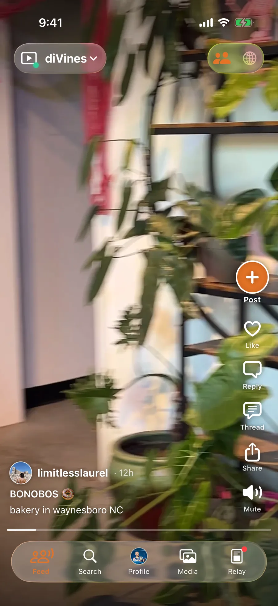
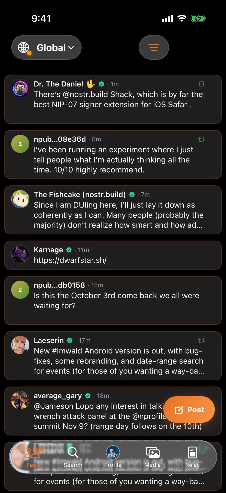
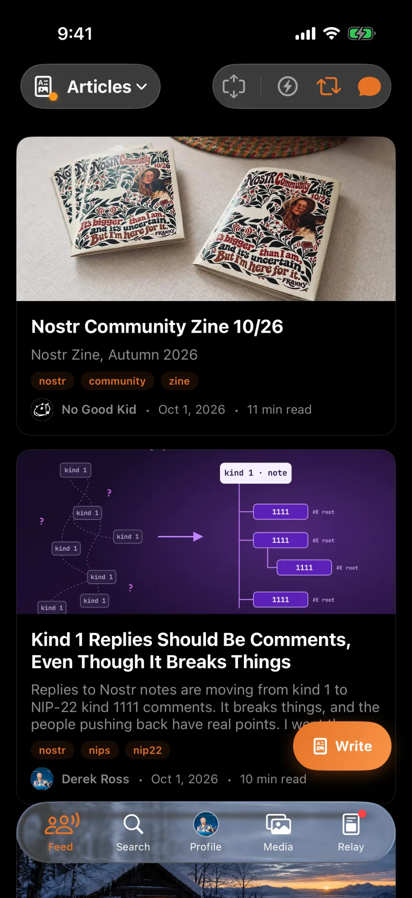
Watch · 30 seconds each
Watch
Every note you post today lives on somebody else’s relay. Nostr Vault runs one on hardware you hold, mirrors your outbox, inbox, chats and Blossom media to it, and keeps your key encrypted with NIP-49 or out of the app entirely with a NIP-46 bunker. Zaps ride Nostr Wallet Connect, and your on-chain Bitcoin is derived from the same nsec.
See the screens →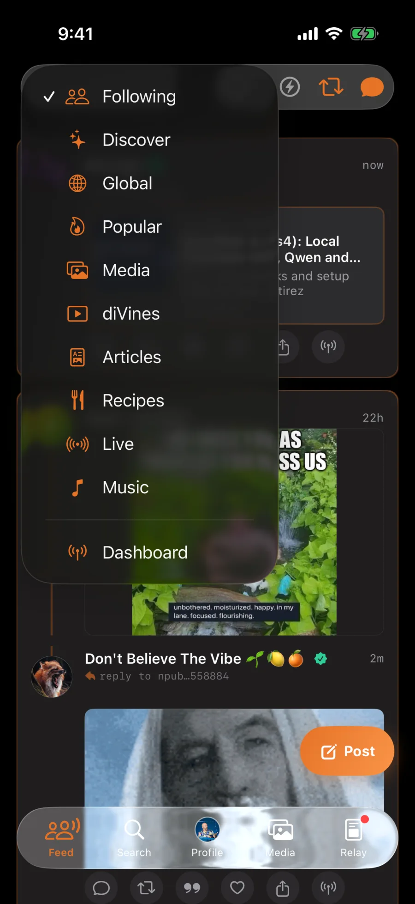
One app. Eleven feeds.
Nostr is more than short notes. Nostr Vault reads every kind the network speaks and gives each one a home, so you switch between them from a single menu instead of a single firehose.
Web of Trust
Every account on Nostr sits somewhere in your follow graph. Nostr Vault draws it as a globe: you at the centre, and an orange thread for every follow you already trust.
What’s inside
The same battle-tested Go relay that powers the Haven CLI is compiled into the app as a static library. One process, no helpers, no server to rent. Your notes are stored on your device first and broadcast outward from there.
Your nsec is encrypted with NIP-49 and the password lives in the system Keychain. Prefer to keep the key off the device entirely? Pair a NIP-46 remote signer by scanning its bunker QR code, on iPhone and Android.
Send and receive sats through Nostr Wallet Connect with a live balance, invoice amounts shown before you pay, lightning addresses and a history tab. Zap a note, a reel or a live stream without leaving it.
Nostr Vault derives a native Taproot address from your Nostr key and can sweep it on-chain, signed with Schnorr inside the app and broadcast through Mempool. No external wallet, no extra seed.
Global feeds are filtered by the trust graph of your follows, so a fresh account starts with a seeded graph instead of the raw firehose. Language filters, mute-list sync and per-account block lists round it out.
A built-in Blossom server stores your photos and videos, mirrors them to the servers you choose and signs each upload once. Paste an image into the composer and it lands on your own storage.
DMs, mentions, replies, zaps, reactions and reposts are generated on-device from your own relay stream. No push server, no third party, selectable sounds, and taps that open the right note.
Vault Pulse, Feed Glance, Quick Actions, Sats, Mosaic and Lock Screen widgets on iOS and iPadOS, with home-screen widgets on Android too. On iPad the feed and relay become true columns with a draggable divider.
SwiftUI on iPhone, iPad and Mac. Jetpack Compose on Android. Six accent themes, one motion vocabulary that honours Reduce Motion, a GIF keyboard in the composer, and a menu-bar status panel on the Mac.
Screens
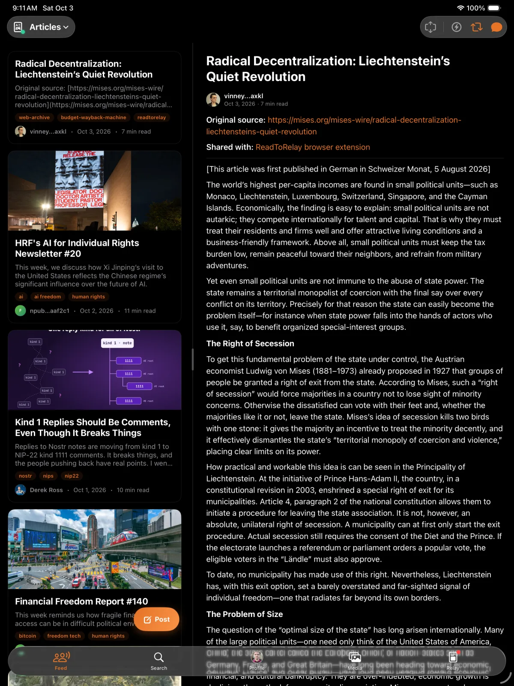
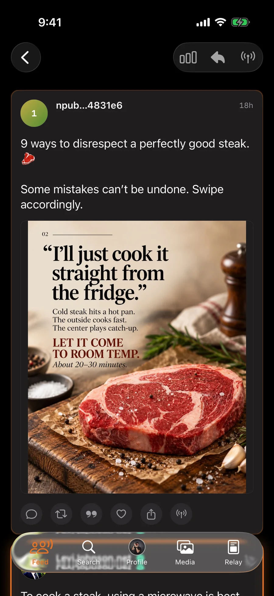
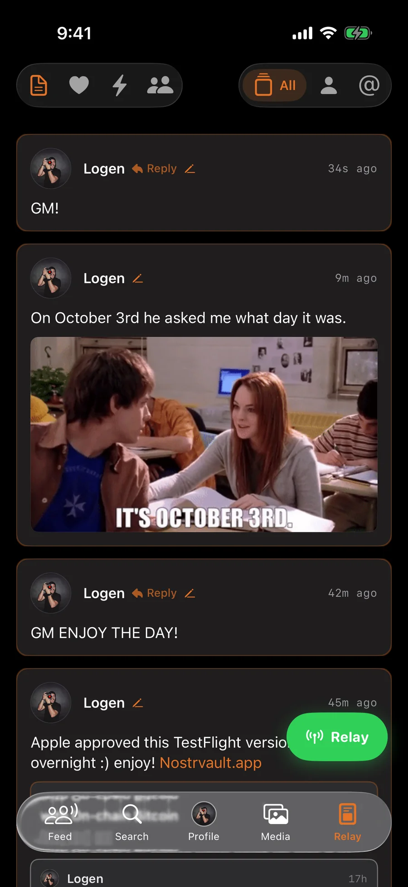
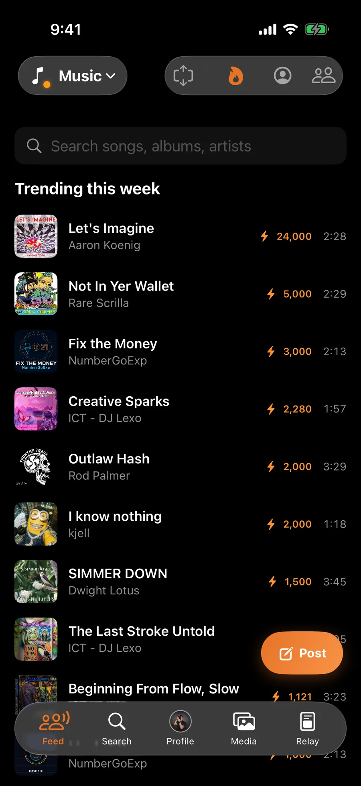
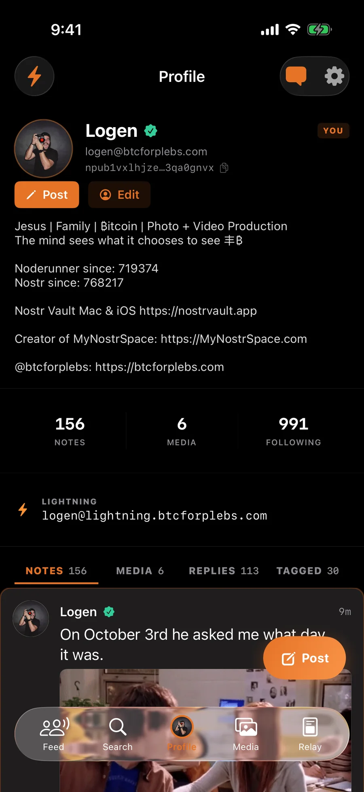
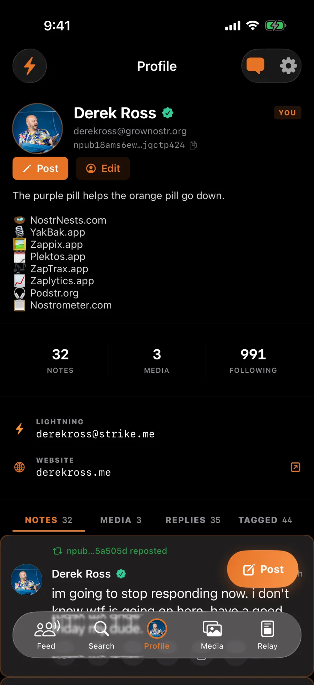
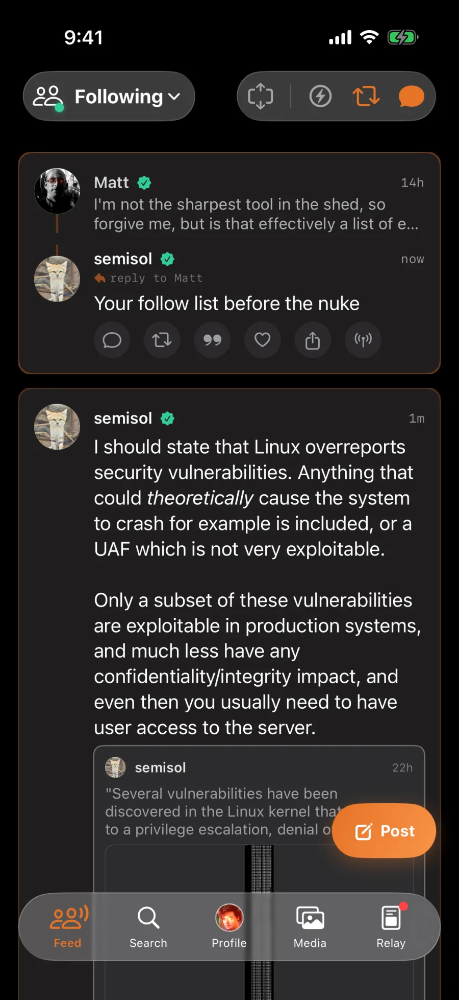
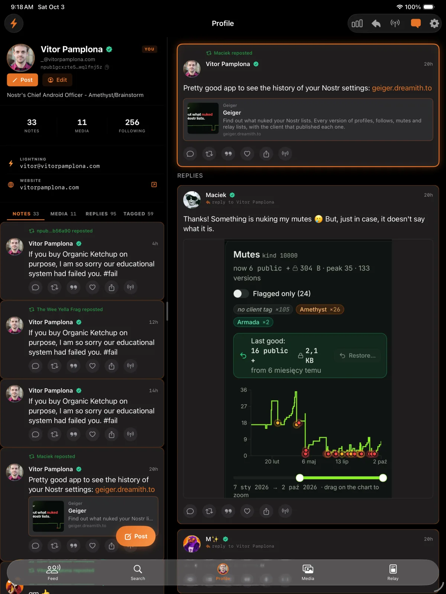
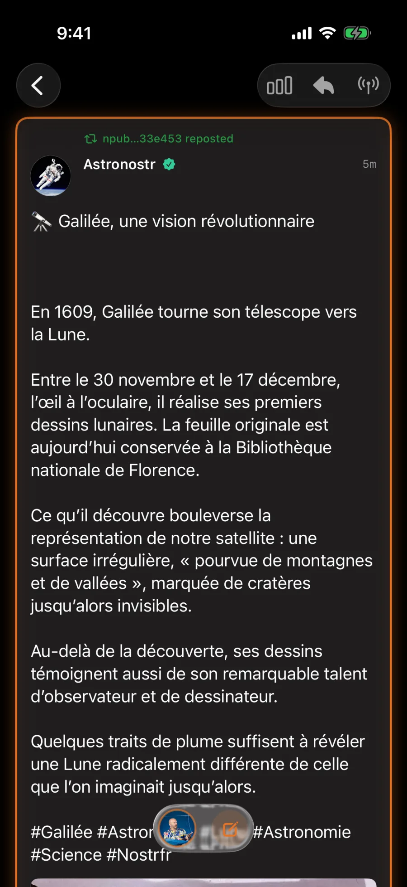
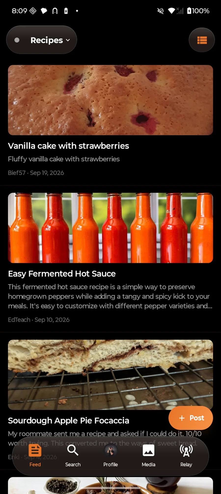
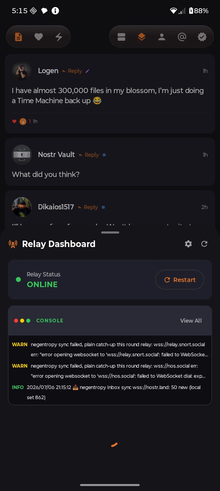
On-chain
Nostr Vault is the first native Nostr client to derive a real on-chain Bitcoin address directly from your Nostr secp256k1 key, and let you sweep it.
Pure BIP-341 key-path Taproot (P2TR) derivation, computed in Go by btcsuite/btcd inside
the embedded relay. Same private key, a new address, zero external processes.
Fetches your UTXOs from a Mempool instance, builds a raw Taproot transaction, signs it with Schnorr via key-path spending and broadcasts it, all inside the app.
The pre-sweep screen loads your spendable balance live from Mempool with a fiat equivalent from the built-in price service. No surprises before you sign.
Two ways to run it
Every build carries the full relay. What changes is who can reach it.
Your device keeps a complete copy of your notes, media and lists, and pushes everything out to the relays you configure. Nothing on the network can reach in to read from your phone, so it is a private backup and a megaphone rather than a public address. On Android you can even swap in another on-device relay such as Citrine.
Run it 24/7 on a Mac with a real URL like relay.yourdomain.com, and anyone can connect
to read your notes: your own phone, your friends, other relays. Set the Mac as a relay in the mobile
app and it syncs your full history once, then keeps you current. Push and pull.
Export your notes as JSONL and your Blossom media as files, straight from the relay dashboard. Import them on another phone or an iPad and your vault is back, nothing lost. No account to recover, no server to ask.
Native on iPhone, iPad, Mac and Android. Bitcoin-aware. Encrypted by default. Verifiable from source.